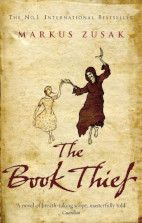

I read a lot. I maintain a reading list of past and future books which stretches 300+ books in either direction. This is currently hosted as a google sheet on my Drive but I think could be usefully transferred to this website. I also write notes on most of the non-fiction books I read. Those notes currently exist as a Latex / PDF document but again could be transferred to this website. However I currently lack the skills to achieve the level of interactivity I would want from web hosting my list and notes so I will hold doing so back for a future project further into my training.
Shogun -
James Clavell
I have a soft spot for novels that span many years and Shogun is my favourite example of that type. The story of a westerner who becomes stranded in Shogunate Japan the sweeping narative has a human core at the centre of political intrigue.
Matterhorn -
Karl Marlantes
This is the best war novel I have ever read. Written by a Vietnam veteran reading it is an immersive experience that for me does as much as a memoire to bring home the horror of the conflict and the relationships between the soldiers who served in it. A more trite description would be that if Band of Brothers was a novel set in Vietnam this is the novel it would be.
The Book Thief -
Markus Zusak
A coming of age story set in Berlin during WWII and narated by Death. There's something about the way this novel is written which just makes it come alive to me. The prose and the narative are inextricably linked and the combination is a deeply moving novel about the things which shape us as people.